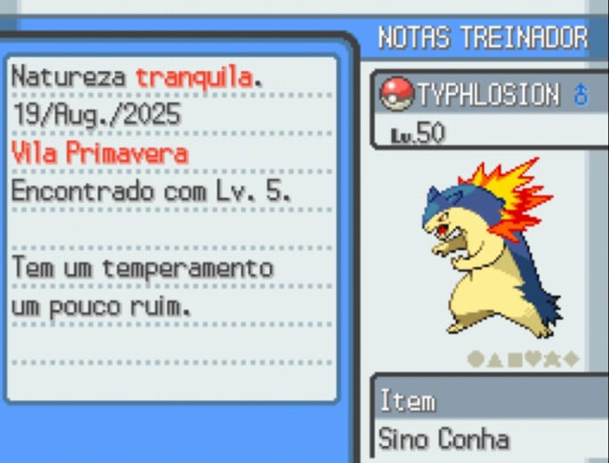

Meu inicial, capturado no LV. 5 ainda na Vila Primavera ao ajudarmos o professor, que estava sendo atacado por um Pokémon selvagem. Me acompanhou desde o início, sem nunca sair da minha equipe principal, e evolui por duas vezes, antes de chegar no nível que está hoje.
Pokémon do tipo fogo e terrestre.